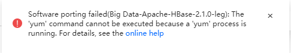

When you run yum installation commands in a dedicated software porting task, an error message is displayed, as shown in the following figure.

Before startup, a yum process checks whether other yum processes are running in the system. If yes, the yum process waits until other yum processes are stopped. To prevent system resources from being exhausted, the tool checks whether other yum processes exist in the system before running a yum command. If yes, an error message will be displayed and the yum command will be stopped.
mount /root/CentOS-7-x86_64-Everything-1810.iso /media -o loop
cd /etc/yum.repos.d/ //Go to the Yum source configuration directory.
mv ./* path //Back up the original Yum source configuration.
vi /etc/yum.repos.d/media.repo
[InstallMedia] name=CentOS7.6 metadata_expire=-1 gpgcheck=0 cost=500 baseurl=file:///media enabled=1
yum makecache